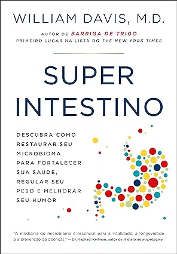
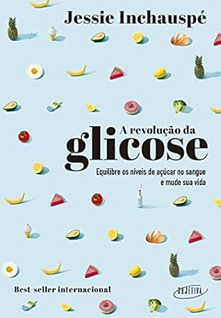
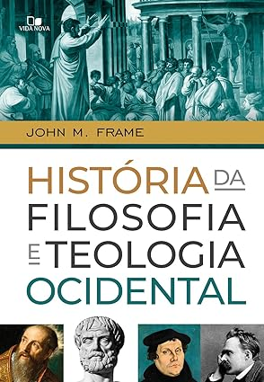
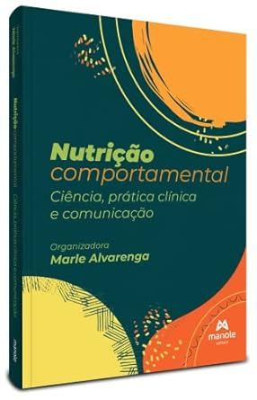

GÊNERO: Saúde

autor Tom O Bryan
Como tratar doenças autoimunes pertence à rara categoria de livros que surgem para alterar definitivamente o curso de inúmeras vidas. Seu autor, o dr. Tom O’Bryan, é um dos grandes nomes atuais da investigação da autoimunidade e da sua forte relação com a sensibilidade ao glúten. Com agilidade e naturalidade invejáveis, Tom O’Bryan nos faz passear desde a epigenética a extensos conhecimentos de nutrologia, de temíveis estatísticas de alimentos geneticamente modificados a listas de tirar o fôlego com alimentos naturalmente anti-inflamatórios.

autor Amy Myers
As doenças autoimunes são, quase sempre, de difícil tratamento, pois a medicina convencional até hoje não oferece uma perspectiva clara de cura para os pacientes que sofrem de males crônicos e debilitantes, como Doença de Graves, Psoríase, Lúpus, Fibromialgia, Esclerose Múltipla, entre outras. Nesses casos, como paliativo para tentar manter essas enfermidades sob controle, lança-se mão de coquetéis de substâncias tóxicas que não enfrentam a causa principal dessas moléstias
autor William Davis
O consagrado autor de Barriga de trigo mostra como a restauração do microbioma pode melhorar sua saúde, seu peso e até mesmo seu humor. “Superintestino revela que quase todos os aspectos da saúde são influenciados pela vasta gama de organismos microscópicos que vivem dentro de nós, e podemos usar isso a nosso favor.” ― David Perlmutter, autor de A dieta da mente
autor Jessie Inchauspé
Como principal fonte de energia, a glicose impacta de maneira surpreendente o nosso corpo. Se a concentração no sangue fica muito alta, ocorrem respostas das mais variadas: compulsões alimentares, espinhas, enxaqueca, névoa mental, oscilações de humor, ganho de peso, sonolência e infertilidade. E, com o passar do tempo, esse desequilíbrio pode contribuir para o desenvolvimento de doenças como diabetes tipo 2, síndrome do ovário policístico, câncer, demência e cardiopatias.
GÊNERO: Teologia
autor Wayne Grudem
Para permanecer firme na fé e desenvolver uma base sólida para a vida com Deus, é preciso conhecer os princípios que regem a vida cristã e entender por que eles se mostram tão essenciais. É com esse propósito que Wayne A. Grudem nos convida a refletir sobre os principais fundamentos da fé cristã, a fim de trazer auxílio e respostas tanto para novos convertidos como para os mais maduros na caminhada.
autor John M. Frame
História da filosofia e da teologia ocidental é fruto de quarenta e cinco anos de ensino de John Frame sobre temas filosóficos. Nenhuma outra investigação da história do pensamento ocidental oferece a mesma mistura revigorante de clareza expositiva, insight crítico e sabedoria bíblica. Complementada por guias de estudo, bibliografias, links para citações famosas de pensadores influentes, vinte apêndices e um capítulo de glossário, este livro que ganhou o prêmio Gold Medallion Book Award é uma excelente escolha como manual para cursos de nível universitário, seminários e estudo pessoal.
autor Stanley Horton
A Santíssima Trindade, a Criação do Universo e da Humanidade, o Batismo no Espírito Santo, os Dons Espirituais, a Cura Divina e a Missão da Igreja. Estes e outros temas são explicados, sob uma ótica pentecostal, por um grupo de 20 dos mais respeitados teólogos dos EUA, buscando, assim, fortalecer sua fé.
autor Geerhardus Vos
A teologia bíblica e a teologia natural parecem não combinar. Qual é a importância da revelação geral de Deus na natureza? Geehardus Vos, conhecido como o pai da teologia bíblica contemporânea, mostra que teologia bíblica e teologia natural estão, na verdade, interligadas.
GÊNERO: Psicologia
autor por Vários
Escrito em linguagem simples e acessível, O livro da psicologia é ricamente composto por infográficos, ilustrações e textos atraentes. A obra é fundamental e envolvente tanto para curiosos no assunto quanto para os estudantes mais entusiasmados. O título faz parte da coleção best-seller As Grandes Ideias de Todos os Tempos que tem mais de 20 títulos publicados pela Globo Livros e assuntos tão diversos como mitologia, ciência, filosofia, economia, sociologia e história, entre tantos outros.

autor Carol S. Dweck
Carol S. Dweck, ph.D., professora de psicologia na Universidade Stanford e especialista internacional em sucesso e motivação, desenvolveu, ao longo de décadas de pesquisa, um conceito fundamental: a atitude mental com que encaramos a vida, que ela chama de “mindset”, é crucial para o sucesso. Dweck revela de forma brilhante como o sucesso pode ser alcançado pela maneira como lidamos com nossos objetivos. O mindset não é um mero traço de personalidade, é a explicação de por que somos otimistas ou pessimistas, bem-sucedidos ou não. Ele define nossa relação com o trabalho e com as pessoas e a maneira como educamos nossos filhos. É um fator decisivo para que todo o nosso potencial seja explorado.

autor por Vários Autores (Autor)
O Essencial da Psicologia – PSICOLOGIA APLICADA NO COTIDIANO fala um pouco de tudo o que representa o conhecimento da Psicologia: os pioneiros Freud e Jung, os sonhos e distúrbios do sono, amor e paixão, os ídolos e a idolatria, casamento, família e crises, a adolescência e seus conflitos, os mitos (e crises) dos super-heróis e os efeitos psicológicos da cores e dos pets na vida das pessoas. Sigmund Freud é uma das personalidades da história da humanidade que, definitivamente, dispensa qualquer tipo de apresentação.

autor Philippa Perry
Todos os pais querem que seus filhos sejam felizes, sem errar na educação. Mas como atingir esses objetivos? Em vez de mapear um plano “perfeito”, Philippa Perry oferece um olhar geral sobre como desenvolver relacionamentos de qualidade. Sem julgamentos e regras, Perry ensina a: * entender como sua própria criação afeta sua relação com seus filhos; * aceitar que irá cometer erros e entender o que pode fazer a respeito deles; * dar fim a ciclos e padrões de comportamento negativos; * lidar com os próprios sentimentos, assim como os de seus filhos; * entender o que comportamentos diferentes comunicam.
GÊNERO: Nutrição
autor João Felipe Mota
O livro apresenta como base conceitual a terapia nutricional nas diversas condições clínicas da pessoa com diabetes, sendo seu material distribuído em 18 capítulos, divididos em quatro partes: 1. Nutrição e diabetes mellitus. 2. Diabetes mellitus e ciclos de vida. 3. Abordagem nutricional do diabetes mellitus em situações especiais. 4. Nutrição e diabetes mellitus na prática clínica.

autor Marle Alvarenga
Este baralho que tem como objetivo oferecer aos nutricionistas alternativas e possibilidades de respostas, estratégias e ações para serem colocadas em prática com seus pacientes, baseadas no aconselhamento nutricional, entrevista motivacional, comer intuitivo, comer com atenção plena e terapia cognitivo-comportamental.
autor por Marle Alvarenga (Compilador)
Quando apresentamos a abordagem Nutrição Comportamental na primeira edição de nosso livro Nutrição Comportamental, em 2014 (com edição ampliada e revisada em 2019), não se usava este termo em nosso contexto. É uma alegria, uma responsabilidade – e às vezes uma preocupação (pelas distorções) – ver o quanto este nome se popularizou, e o quanto o interesse pelo estudo do Comportamento Alimentar se ampliou. Desta forma, esta nova obra, Nutrição comportamental - ciência, prática clínica e comunicação contribui para difundir e atualizar conhecimento de qualidade, com bases científicas, para todos os interessados em compreender melhor o Comportamento Alimentar dos seres humanos.

autor Thiago Durand Mussoi
Avaliação Nutricional na Prática Clínica | Da Gestação ao Envelhecimento reúne as diferentes possibilidades de avaliação nutricional de crianças, adolescentes, gestantes, adultos, idosos e pacientes hospitalizados. Seu principal diferencial, entretanto, não é conter todos esses elementos, mas registrá-los em um livro prático, acessível e de consulta rápida, como deve ocorrer em obras voltadas para a prática clínica resolutiva. Com esse objetivo, apresenta equações, tabelas e classificações utilizadas na avaliação de medidas antropométricas convencionais e não convencionais, análises da composição corporal, recomendações nutricionais, cálculos de requerimento energético, triagem e diagnóstico nutricional, interação fármaco-nutriente, e muito mais. Importante ferramenta para o dia a dia de estudantes de Nutrição e profissionais da área que atuam em clínicas, consultórios, ambulatórios e hospitais, esta obra viabiliza o acesso à maioria dos instrumentos necessários para avaliar o estado nutricional nas diferentes etapas da vida.?